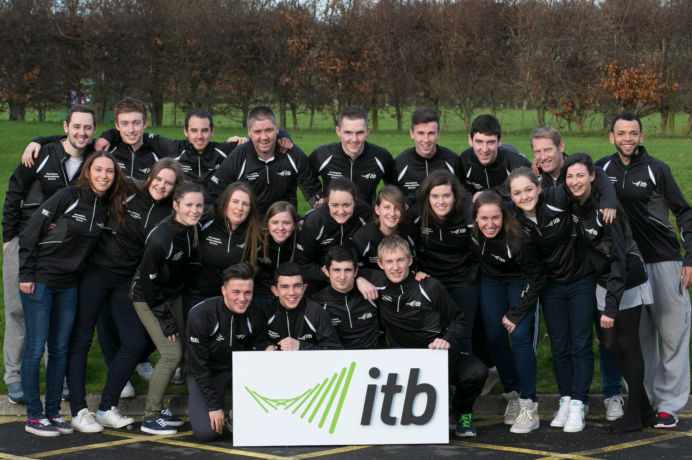

This website contains information on the history of ITB from many different areas along with the ecology of the surrounding area and then sporting background tied to the college.
Institute of Technology Blanchardstown (ITB) is situated in Corduff, Dublin 15. In January 2019, ITB will become TU Dublin, as it joins ITT and DIT in becoming a university.
This website contains information on the history of ITB from many different areas along with the ecology of the surrounding area and then sporting background tied to the college.